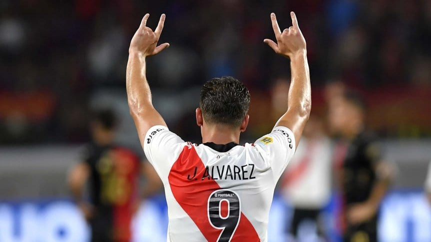

JULIAN ALVAREZ
Nombre completo: Julián Álvarez
Fecha de nacimiento: 31 de enero de 2000
Posición: Delantero
Derecho
EXPERIENCIA
- River Plate (2018–2022)
- Manchester City (2022–2024)
- Atlético de Madrid (2024–Actualidad)
PERFIL
Delantero rápido, presión constante y buen olfato goleador.
REFERENCIAS
Preguntarle a los defensores… todavía me están buscando.
Campeón del Mundo (2022) con Argentina national football team
Ganador de la UEFA Champions League
Goles importantes en momentos IMPORTANTES (marca registrada)